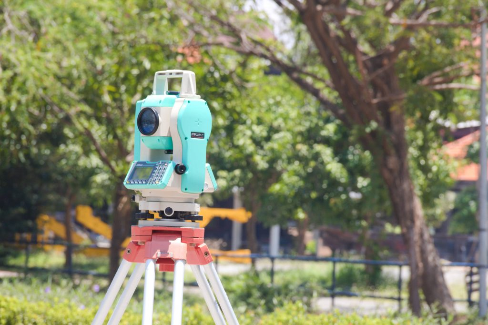
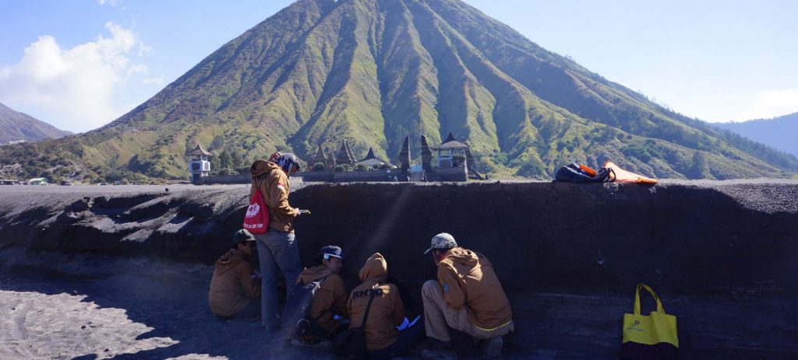
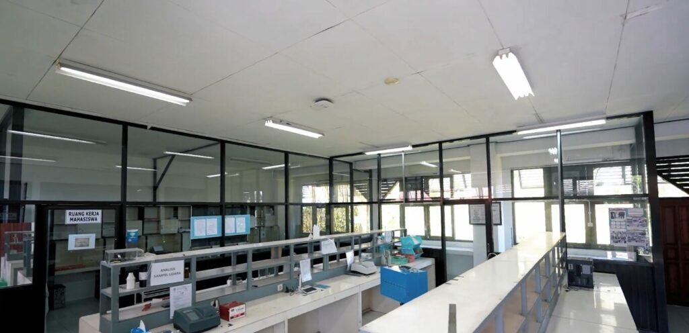
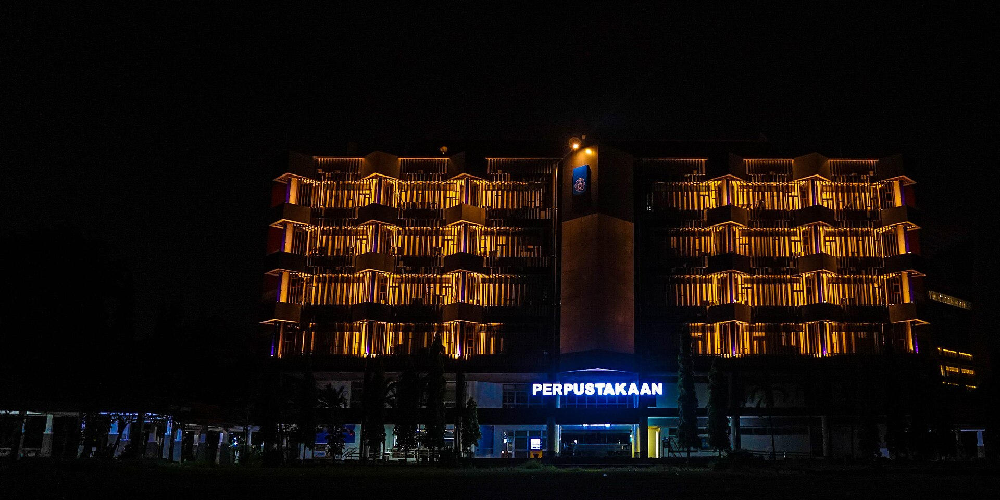
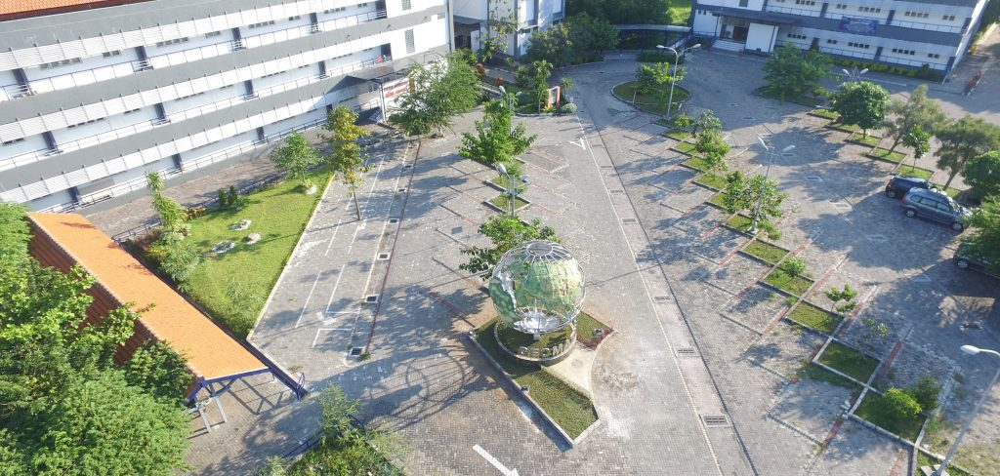

Fakultas Teknik Sipil, Perencanaan, dan Kebumian ITS — dipetakan utuh di Sukolilo, dan bisa diputar langsung dari peramban.
- Departemen
- 0
- Program studi
- 0
- Akreditasi departemen
- Unggul
Peramban ini tidak menyalakan WebGL, jadi lambang 3D-nya tidak bisa digambar.
Enam departemen
Enam program sarjana dan sembilan program pascasarjana bernaung di bawahnya. Arahkan kursor ke salah satu kartu untuk melihatnya menyala.
-
01
Teknik Sipil
Struktur, jembatan, dan jalan — yang menahan beban kota setiap hari.
-
02
Arsitektur
Bentuk ruang dan cara orang benar-benar memakainya.
-
03
Teknik Lingkungan
Air bersih, pengelolaan limbah, dan udara yang layak dihirup.
-
04
Perencanaan Wilayah dan Kota
Menata guna lahan dan menentukan ke mana sebuah kota tumbuh.
-
05
Teknik Geomatika
Mengukur bumi: survei, penginderaan jauh, dan peta. Proyek ini lahir di sini.
-
06
Teknik Geofisika
Membaca apa yang tersimpan di bawah permukaan tanah.
Yang dikerjakan di sini





Kampusnya sudah siap diputar.
Peta terbuka langsung pada kualitas penuh.
Buka peta 3D